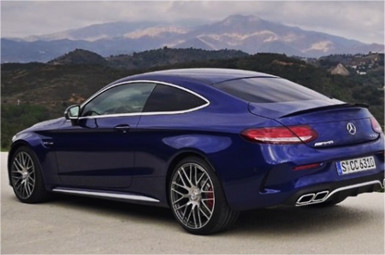

Je auto verkopen? Bereken de waarde van je auto.
Bereken eenvoudig de waarde van je auto en plaats vervolgens je auto advertentie binnen 2 minuten. Ontdek hoe vergelijkbare auto's gemiddeld verkocht worden op Marktplaats. Je auto verkopen? Het begint op Marktplaats.
1 miljoen unieke bezoekers per maand
50% krijgt een goed bod binnen 3 dagen
30% verkoopt de auto zelfs binnen 1 dag!
Het geheim van een goede auto-advertentie
Goede foto’s maken
Een goede foto verkoopt de auto bijna vanzelf. Maar hoe maak je simpel en snel goede foto’s van je auto? Een gerenommeerde autofotograaf deelt zijn beste tips.
Pakkende advertentieteksten
Hoe breng je je auto zo goed mogelijk onder de aandacht bij 1 miljoen autokopers? Ontdek wat belangrijk is aan een goede advertentietekst.
Verkooptips van onze experts
Een team van experts nam gedurende een aantal weken autoadvertenties onder handen. Een gratis service om mensen die hun auto écht snel kwijt moeten, een handje te helpen. Ontdek hoe we van gewone mensen topverkopers maakten en leer zelf de geheimen van de dealer.
Hoe bouw je een goede advertentie op en hoe kom je tot de juiste prijs?
Hoe kom je simpel en snel tot een goede foto van je auto?
Wat is belangrijk aan een goede advertentietekst?
Hoe val je op tussen andere autoadvertenties op Marktplaats?
Nov 25 2015 | Steffert Stienstra | De tweede generatie Renault Scénic kwam in 2003 op de markt. Technisch is het model gebaseerd op de Renault Mégane. De midi-MPV Scénic biedt genoeg plaats voor vijf personen tijdens een..

Nov 25 2015 | Waar de vorige Mercedes-AMG C63 de beschikking had over het brute atmosferische 6,2-literblok, krijgt de nieuwe generatie een 4,0-literblok met twee turbo´s. Maar is dat net zo lekker? Motorblok De vori ....
Nov 23 2015 | De Hyundai i10 werd in 2007 geïntroduceerd als vervanger van de Hyundai Atos. In 2014 is de tweede generatie i10 op de markt gekomen en dat maakt de eerste generatie misschien een interessante occasi ...
Ontdek hoe andere gebruikers hun auto succesvol verkochten
Hoe Peter zijn Volkswagen Transporter pick-up verkocht
Wij hebben Peter geholpen met het verkopen van zijn Volkswagen Transporter Pick-up. Na 3 uur ontving hij al een serieus bod en binnen een week verkocht hij zijn Transporter. Ontdek hoe enkele kleine aanpassingen op de advertentie van Peter het verschil gemaakt hebben.
Hoe Rens zijn Citroën Acadiane in 3 dagen verkocht
Wij hebben Rens geholpen met het verkopen van zijn unieke Citroën Acadiane oldtimer. Ontdek de kleine ingrepen die we gedaan hebben om zijn advertentie te verbeteren.
Hoe Tijmen zijn Volkswagen Golf verkocht
Wij hebben Tijmen geholpen met de verkoop van zijn Volkswagen Golf. Binnen een paar uur kreeg hij al een serieus bod en hij heeft zijn auto verkocht voor een goede prijs. Zie meer over de auto van Tijmen.
Waarde auto berekenen? Het begint op Marktplaats.
Ook je auto verkopen?